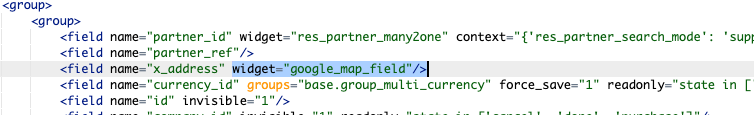

This Google Map field widget is designed for use in your Odoo application. It allows users to enter addresses efficiently by integrating Google Maps, providing address suggestions as they type. The selected address is then stored in the field for later use, and users can interact with the map to visually update the address.
The widget is linked to a char field with the widget property set to google_map_field.
Note: The widget only requires the Google Maps API key to be activated once. If the API key is missing or incorrect, the widget will not function properly, so make sure to enter a valid API key.